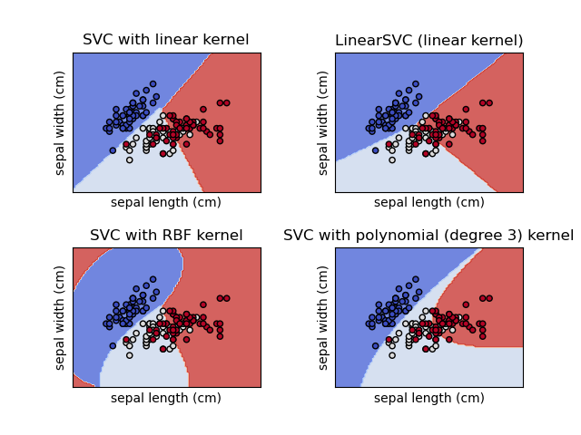

Artificial Intelligence has truly introduced intelligence into the business, from leading to transforming automation to introducing pure intelligence into softwares, AI has transformed the process of how the world develops applications. Such softwares are driven mostly by instruments that can translate natural language perfectly. The advancement of AI has introduced agents which now assist professionals with activities, from automating low-level static tasks. The AI agents are also used to make predictions, to detect frauds, ad generation and making the delivery process smarter to reply back to customers automatically without spending a lot of time. It has also changed educational industries like making the curricula tailored for the students, making education more individualized, it is also being used to collaborate on learning by applying AI agents in class to improve collaborative discourse among the students. As AI continues to develop, its ability to enhance productivity and efficiency across all sectors grows immensely. The ability of such models to handle vast amounts of data improves decision-making and problem-solving. As AI becomes more involved in transforming the industry, one of the most critical questions this poses is the ethical application of AI, such as bias and fairness.
Open-source software such as fairness libraries and interpretability frameworks are becoming more common across AI development workflows so that developers can detect and repair bias early. Even while all of these promising advances are being achieved, actual fairness in AI is a monumental undertaking. Bias might be embedded in data, algorithms, or even social structure, so it shifts constantly. This is something that requires more than technical solutions, it requires ongoing monitoring, inter-disciplinary collaboration between technologists, ethicists, and policymakers, and greater public awareness and engagement. Even as AI keeps redesigning our institutions, economies, and day-to-day lives, designing fairness into the fundamental fabric of its construction is a technological as well as societal imperative. Placing equity front and center is the only way to help create public confidence and ensure such mighty technologies act in the global common interest, inclusively, fairly, and responsibly.
The ethics of AI is the most controversial debate since there is uncertainty in its application in the industry in a just manner, it requires thorough regulation and scrutiny. Lastly, the future ability of AI to complement human intelligence will transform the work in the future. Ensuring fairness in AI is vital since unfair algorithms have the power to increase existing inequalities. Bias has a tendency to arise due to biased training data, human biases or improper model assumptions. The consequence of bias in the business world can be very severe, especially in industries such as work, lending, health and law enforcement, where an AI makes a decision that has a direct and tangible impact on individuals' lives. Governments and regulators around the globe are evolving towards coming up with laws which guarantee artificial intelligence platforms to be developed and deployed based on honor, transparency, and ethical quality. Consequently, firms are embracing strict fairness auditing, initiating advanced bias abatement techniques, and employing variety-rich and representative data so that their AI systems will become elevated in validity as well as inclusion.
Following the transformation, it is very important to investigate and understand how society is reacting to the advancement of AI. To be specific, the aspects of fairness and responsibility is the one that must be analysed. While much research has shown to have developing technical fixes or regulatory solutions, there is very little known about how the narrative is being constructed in the public space, especially through the media.News reports often serve as a reflection of social concerns, inclinations, and aspirations and are therefore a valuable resource to analyze. This particular work delves into uncovering patterns of construction of discourses on AI fairness and bias in mainstream media.. It aims to learn the sentiment behind these news articles that are made public to learn more about how the public perceives AI. Through title and content analysis of thousands of news reports, the study attempts to identify patterns in trends, sentiment, and frames that go otherwise unnoticed. This kind of analysis can pick up very powerful signals in the way the word is thinking about the moral structure around AI. This can guide future research agendas, policy, and public debate. The goal of the project is to conduct experiments to answer the following research questions:

The data was collected through different sources by means of systematic scraping.
First of all, an API request was initiated to Reddit to scrape comments related to AI bias, AI discrimination, AI fairness, and AI ethics.
The request was initiated to comments and posts on similar Reddit pages where individuals share thoughts related to fairness and bias in AI systems openly. The information was stored along with its respective labels (400 rows), in such a way that every record was labeled according to its thematic value. Then, an API call was sent to NewsAPI to fetch news articles on the same topics of discussion (398). The aim was to gather opinions from news sources and compare them with user forums on Reddit. All the articles were also stored along with their metadata, like their label, title, description, and entire content if accessible. In the case of news and user-generated content, the dataset provides a fascinating insight into how AI bias and fairness are perceived on different platforms. To further enrich the dataset, additional data were scraped from one webpage using BeautifulSoup. The process involved scraping relevant text, stripping redundant HTML tags, and re-structuring the scraped rows to conform to the data already gathered. The newly collected entries were appended to the dataset without disrupting format and label integrity.
 Fig. 6 Count Vectorized Data
Fig. 6 Count Vectorized Data
 Fig. 1 Sample Data before Cleaning
Fig. 1 Sample Data before Cleaning
 Fig. 2 Sample Data after Cleaning
Fig. 2 Sample Data after Cleaning
 Fig. 3 Stemmed Data
Fig. 3 Stemmed Data
 Fig. 4 Lemmatized Data
Fig. 4 Lemmatized Data
Finally, the cleaned dataset was transformed into a format suitable for analysis. CountVectorizer (refer fig. 5) and TF-IDF vectorization (refer fig. 6) were applied to convert textual data into numerical representations to enable further analysis of word frequency and its significance in discussions on AI bias and fairness. Exploratory Data Analysis On the preprocessed data, an Exploratory Data Analysis (EDA) was conducted to uncover significant trends in the discussions on AI bias, discrimination, fairness, and ethics. The analysis involved generating TF-IDF bar charts to determine the best words in responding to each question, as well as word clouds to portray commonly occurring words in user dialogue and news articles.
On the cleaned dataset, an Exploratory Data Analysis (EDA) was conducted to uncover key patterns in discussions surrounding AI bias, discrimination, fairness, and ethics. The analysis involved generating TF-IDF bar charts to highlight the most impactful words for each query, as well as word clouds to visualize frequently occurring terms in user discussions and news articles.
TF-IDF bar charts provided us with an understanding of the most significant words for each query and the trends in the conversation on AI-related fairness and bias. For instance, words "bias," "data," and "people" were very important when discussing AI bias (fig. 7 and fig. 8), while words "ethical," "intelligence," and "artificial" were prominent in conversations on ethical AI. In the same vein, conversations about AI fairness often highlighted "people," "think," and "make" as concerns relating to decision-making in AI (see fig. 9 and fig. 10).
 Fig. 10 Word Cloud representing words from 'AI Ethics' data
Fig. 10 Word Cloud representing words from 'AI Ethics' data
Word clouds also evidenced the range of conversations by extracting the most occurring words within varying themes. The use of words like "human," "system," and "work" in debates about AI bias suggests ongoing debate about the way humans interact with AI systems and their perceived fairness (see fig. 10). When debating AI ethics, words such as "think," "use," and "need" suggest the importance of decision-making and ethical considerations of AI adoption (see fig. 9).
Fig. 12 Word Cloud representing TF-IDF from 'AI Bias' data
The TF-IDF measures of the different topics related to AI indicate distinctive patterns of word importance in different conversations. In Fig. 11, the words discrimination, artificial, and intelligence indicate significant problems in AI discrimination topics, with people and just being some of the most important words, indicating fairness-related conversation. Similarly, Fig. 12 on AI bias uses words like human, biased, and data, mirroring discussion on human influence in AI fairness and system biases. Fig. 13 on AI fairness is interestingly inclusive of French terms (dans, mais, pour), mirroring potential multilingual effects on the dataset. Lastly, Fig. 14, which is on AI ethics, has salient words like ethics, artificial, and intelligence, mirroring the significance of ethical concerns in AI systems. These findings collectively represent the nuanced discussions in AI bias, fairness, discrimination, and ethics with a strong emphasis on human influence, principles of fairness, and ethical AI deployment.
 Fig. 11 Word Cloud representing TF-IDF from 'AI Discrimination' data
Fig. 13 Word Cloud representing TF-IDF from 'AI Ethics' data
Fig. 11 Word Cloud representing TF-IDF from 'AI Discrimination' data
Fig. 13 Word Cloud representing TF-IDF from 'AI Ethics' data
 Fig. 14 Word Cloud representing TF-IDF from 'AI Ethics' data
Fig. 14 Word Cloud representing TF-IDF from 'AI Ethics' data
Overall, these visualizations provided an unambiguous snapshot of the dataset, helping identify salient themes, shared concerns, and linguistic patterns in AI discourses from various sources.
The link to the code and the data generated after cleaning can be found here.
Clustering is an unsupervised machine learning method that deals with finding clusters of most similar tokens among the set of large sets of tokens in a dataset. The task of the algorithm is to use an unlabeled dataset to find clusters of similar data using distance metric like the cosine similarly or cosine distance. The two types of clustering algorithm used in this project are, Kmeans clustering and Hierarchical clustering.
The algorithm behind k-means is a learning algorithm that groups data points into k clusters, given the value of k. Each cluster is represented by a centroid, which is the average or mean of all data points within that cluster. The algorithm works as follows, it works iteratively, assigning data points to the nearest centroid and then recalculating the centroids based on the new cluster assignments, it’s done using a distance metric e.g., Euclidean distance (refer to fig. 15 ) to determine the proximity of data points to cluster centroids, it calculates the direct linear distance between data points, effectively acting as a great similarity score for clustering algorithms. The main objective of k-means is to minimize the sum of squared distances between each data point and its assigned cluster centroid, eventually finding the most minimum squared distance between points and the centroid and forming clusters within the dataset.
The algorithm behind hierarchical clustering groups data points into a hierarchy of clusters, represented as a tree-like structure (dendrogram), where clusters are eventually merged or split based on similarity. The similarity measure used in the project is the cosine similarity (refer to fig. 16), it computes the cosine of the angle between two vectors, giving a robust similarity measure that focuses on direction rather than magnitude. It either starts with each data point as its own cluster and iteratively merges the closest clusters until a single cluster remains, or starts with all data points in one cluster and iteratively splits it into smaller clusters until each data point is in its own cluster.
In the current project, the work deals with using clustering to group the most similar words from the description of the new articles that talk a lot about bias and fairness in AI systems. Through clustering the algorithm is predicted to be able to clearly distinguish between the three classes of data and probably seep in and discover a fourth class to the dataset.
Clustering as mentioned in the overview does not require labels as it works on unsupervised principles of machine learning. The dataset that is used in the current work also excludes labels as part of the data (refer to fig. 17). The dataset is also cleaned to remove stop words, special symbols, words that aren’t in english, words that aren’t part of the dictionary to obtain a cleaned dataset for processing. The cleaned text is then transformed into a numerical representation using TF-IDF (Term Frequency-Inverse Document Frequency). This method converts each document into a vector where each element represents the importance of a particular word in that document relative to the entire corpus, refer to fig. 18. Sample data before and after cleaning can be found here
The following code file deals with a set of code that performs Kmeans and Hierarchical clustering on the dataset. Documents represented as TF-IDF vectors, the clustering algorithm, which is KMeans, computes the distance between these points. Euclidean distance is used on the TF-IDF vectors to determine how similar or dissimilar the documents are. Hierarchical clustering, groups data points into a hierarchy of clusters, represented as a tree-like structure (dendrogram), where clusters are eventually merged or split based on similarity. The code file can be found here
 Fig. 15
Fig. 15
 Fig. 16
Fig. 16
 Fig. 17
Fig. 17
 Fig. 18
Fig. 18
 Fig. 20
Fig. 20
The figure 19 represents the silhouette scores that were calculated for various numbers of clusters. In our example the silhouette scores represent that the data can be best represented with three clusters as observed by a high score. To represent the data in three dimensions, PCA has been applied and the new data points are represented in three dimensions along with their cluster information, as observed in figure 20. From the figure it can be observed that the data has more or less smoothly distinguished itself into three clusters. Though the dataset was collected to represent bias and fairness, it’s fascinating to see a new class of dataset. This could potentially be the cause of outliers, it is found that the cluster represented using the purple color seems to be an outlier to the dataset, these utterances could be the ones that have nothing to do the bias and fairness as expected in any utterances.
Now moving our attention to the Hierarchical clustering (hclust) results, it is observed from figure 21 that the 30 most influential words fell into two categories as expected. Observing the words that fell into each of these classes, it looks as though the model was able to distinguish between fairness and bias well, the algorithm classifying words such as ‘good’ and ‘happy’ in the first class potentially represents fairness, while ‘bias’ in the second class obviously represents ‘bias’. The most fascinating fact about the clusters is that ‘data training’ has fallen into the ‘bias’ class, indicating that often people relate training to bias, which is originally the cause of bias, and happiness being associated with fairness suggests that people often are happy about AI algorithms being fair in certain cases, indicating that fairness in AI algorithms creates happiness among humans.
Comparing the two algorithms, the silhouette score (kmeans) enhanced with PCA shows that the data is best represented by three clusters; this suggests that there exists a nuanced separation in the data. In contrast, hierarchical clustering grouped the 30 most influential words into two clear categories. It was able to better classify the two categories, bias and fairness effectively.
From the detailed analysis conducted using various clustering algorithms, the following information was perceived. It was observed that bias and data training occurred together suggesting a close relationship between the two as expected. It is also observed that fairness in AI systems creates happiness among humans. Therefore, fairness must be the first priority while developing AI models.
Association Rule Mining or ARM is another unsupervised machine learning algorithm. The logic behind ARM is the technique that discovers relationships and patterns between items in datasets. The relationship that talks about the association between items in the transaction. Given a set of items, ARM tries to find the support, confidence and lift of items occurring together. To understand more about the terms associated with ARM, here is a quick overview,
Support: It measures how frequently an itemset appears in the dataset. The measure mainly deals with the frequency of itemset.
Confidence: Indicates how often the consequent (the "then" part of the rule) occurs when the antecedent (the "if" part) is present.
Lift: Compares the observed confidence with the expected confidence, indicating how much more likely the consequent is to occur given the antecedent.
The formulas associated with each of the terms is as seen in Figure 22Apriori Algorithm: it’s the backbone of the rule mining that takes place using ARM, it is designed to uncover frequent items within a large dataset. It first generates frequent item sets and then throws out those that do not fall within a minimum support count. This iterative approach makes it highly effective for tasks like market basket analysis
ARM is used in the project to find the most closely occurring words, the goal is to realize the words in the domain of fairness and bias that occur together. Through that approach, we aim to understand the relationship between words surrounding bias and fairness.
To perform ARM the data must be transformed into a transaction dataset. The dataset is first cleaned to remove stop words, special symbols, words that aren’t in english, words that aren’t part of the dictionary to obtain a cleaned dataset for processing. To avoid messy data, a subset of data is collected from the dataset to perform ARM. This subset of data is then cleaned and converted to transaction data, refer fig. 23 to view processed dataset and refer figure 17 to view a sample pre-processed dataset. Sample data before and after cleaning can be found here
The code associated with ARM can be found here.
The figures 24, 25 and 26 show the top 15 rules by support, confidence and lift respectively and figure 27 and 28 show the graphical representation of the top 15 confidence rules and top 15 lift rules respectively. From the above graphs there are rules which have 100% confidence, this is because, for the purpose of analysis a very small subset of the dataset had been used to check for the relationship between words. Therefore, the chance of two words being together at all times was higher than usual. {fairness} ⇒ {bias} (support = 0.4) This means that "fairness" and "bias" occur together in 40% of all the transactions. Confidence is around 57%, thus whenever "fairness" appears, "bias" will be present 57% of the time. {systems} ⇒ {ai} (support = 0.3) "systcms" and "ai" occur together in 30% of the transactions. Confidence is 100% here, thus every time "systems" appears, "ai" is always present in the same transaction. tech} ⇒ {bias} (confidence = 1.0) Wherever "tech" appears, "bias" lurks in that very same exchange. {algorithms} → {media} might record a 10.0 boost in the sample. This means that the co‐occurrence of "algorithms" lifts the probability of "media" by a factor of 10, compared to if "algorithms" and "media" were independent. Generally, this extremely high lift occurs when the items co‐occur together in few transactions but always together in them. {proposed} ⇒ {new} with lift = 5.0 Whenever "proposed" happens, "new" is 5 times more likely than if they were independent.
The investigation of the synthetic bias/fairness dataset shows that certain words, such as "ai," "bias," "fairness," and "systems," occur together almost every time they are mentioned. This shows a very strong relationship between these words in the sample. However, because the dataset is controlled and limited, even a few transactions will make these associations seem unusually strong. In other words, although the results certainly indicate the intended relationships between principal concepts, the findings are influenced by the dataset's small size and makeup. For results that can be relied upon more, it would be preferable to sample a larger and more varied dataset.
Fig. 28


Latent Dirichlet Allocation (LDA): Overview: LDA is an unsupervised learning algorithm, the algorithm is a probabilistic topic modeling algorithm used to uncover hidden themes or topics within a collection of documents by analyzing word co-occurrence patterns. It assumes each document is a mixture of topics, and each topic is a probability distribution over words.
Topic modeling: LDA quantifies the distribution of topics across documents. This reveals patterns and overlaps within the corpus. Topic modeling further helps uncover latent semantic patterns, revealing not just obvious relationships between hidden relationships that emerge in large unstructured datasets (refer fig. 29)
LDA is utilized in the work to identify patterns or topics within the dataset that most frequently occur together. Though, a fair idea has been perceived from the other two unsupervised learning techniques (ARM, clustering). LDA will help understand the most important topics being discussed in these news articles and how it relates to bias and fairness.
First, the data is pre-processed by importing it in the lowercase form, removing punctuations and numeric values, and removing common words that do not hold much value. Then, the text is divided into individual words by CountVectorizer, and the word frequencies for each document are used to create a document-term matrix. This word-topic matrix is used as input for LDA, which goes ahead to identify the hidden topics by modeling each document as a mix of topics and each topic as a mix of words. Refer figure 30 to view a sample count vectorized dataset and figure 17 to view a sample pre-processed dataset. Sample countvectorized data can be found here
The code file associated with LDA can be found here
The LDA model, established to reveal four topics, produced a document-topic matrix where each document is represented as a mixture of the latent topics (see fig. 31) for each topic, the model revealed a set of important words that describe the theme. The first fifteen words of each topic were presented in horizontal bar plots (refer fig. 32, 33, 34, 35). These plots revealed that every subject was defined by a distinct collection of terms, which is indicative of the prevalence of different latent themes in the data. For example, one topic may be characterized by words of "ai" and "systems," while another may be characterized by "bias" and "fairness."
A t-SNE scatter plot was used to project the document-topic matrix into two dimensions (refer fig 36). The visualization clearly showed clusters of documents, where each cluster corresponds to the dominant topic of the documents within it. The separation of the clusters indicates that the LDA model successfully uncovered distinct thematic structures in the text. Overall, the results indicate that LDA technique properly identified latent topics in the information, articulating a useful embodiment of the topical diversity in the text.
The study identified a number of unique themes in the discussions about bias and fairness. There is a set of topics that deal with technology and its pitfalls, and a set that revolve around fairness and accountability issues. In short, the process uncovered natural clusters in the conversations, illustrating that when people talk about artificial intelligence or systems, they also talk about bias, and when they talk about fairness, they also discuss notions of equity and responsibility. This observation shows that the data represents a diversity of opinions and matters related to both technological issues and social justice, giving a clearer picture of how these topics are intertwined within the public discussion.
Fig. 36 Fig. 29
Fig. 17
Fig. 29
Fig. 17
 Fig. 30
Fig. 30
 Fig. 31
Fig. 31
 Fig. 32
Fig. 32
 Fig. 33
Fig. 33
 Fig. 35
Fig. 35
The main principle behind the Multinomial Naive Bayes (MNB) algorithm is based on Bayes’ theorem (refer Fig. 33), which assists Multinomial Naive Bayes classifiers in determining the probability of a given set of features belonging to a set of classes. Multinomial Naive Bayes is used in scenarios where the data are presented in a categorical format. During training, the model learns the probability of each feature occurring in a given class. This allows it to develop a probabilistic understanding of the dataset. The probabilities calculated during training are then used during testing. This enables the model to predict the likelihood of a given set of unseen feature values and select the class with the highest probability. The Naive Bayes algorithm as a whole assumes independence between features, which is why it earned the name 'naive' Bayes. In this particular project, the Naive Bayes model is used to predict the performance categories such as 'Performed Poorly' or 'Performed Well' based on the given YouTube titles.
Bernoulli Naive Bayes is another variant of the Naive Bayes algorithm specifically designed to handle binary data. It measures the presence or absence of a particular attribute in a dataset. Bernoulli Naive Bayes also makes the assumption that features are independent of one another. This means that the presence or absence of one feature does not affect the presence or absence of another feature. During training, Bernoulli Naive Bayes calculates the probability of each feature occurring or not occurring in each class. It does this by counting the number of occurrences of each feature in each class and dividing by the total number of documents in that class (refer Fig. 34).
MNB models in this experiment are used to classify text documents extracted from news articles into two classes, bias and fairness. By doing so, we aim to build a classifier that can easily help classify articles into the respective sentiment behind the use of AI in industries.
 Multinomial Naive Bayes formula (Fig. 37)
Bernoulli Naive Bayes formula (Fig. 38)
Laplacian Smoothing Formula (Fig. 39)
Multinomial Naive Bayes formula (Fig. 37)
Bernoulli Naive Bayes formula (Fig. 38)
Laplacian Smoothing Formula (Fig. 39)
Smoothing is a process aimed at preventing occurrences of zero probabilities when testing datasets. During testing, there may be instances where a particular feature has no occurrence in the training dataset, while other features may occur simultaneously. This situation would erroneously result in a zero probability for the entire test dataset, despite the chances of occurrence not being truly zero. To address this issue, various smoothing techniques such as Laplace smoothing (add-one smoothing), Lidstone smoothing, or Dirichlet smoothing are employed. By utilizing smoothing methods like Laplace smoothing, we ensure that neither the numerator nor the denominator in probability calculations becomes zero. Fig. 35 provides the formula for the most commonly used Laplace smoothing method.
The data preparation stage of Naive Bayes was conducted in three steps,
Fig. 43 Test data sample
The code to Naive Bayes’ Classifier performed on python can be found here.
The Multinomial Naive Bayes model was trained on the training dataset with the value of alpha parameter set as 0.2 for the implementation of Laplace smoothing. The results were obtained by running the model on the test dataset, as shown in Figure 40. It is apparent from the results that the precision of the model was higher for the 'bias' label, that is, approximately 75%, while the precision of the 'fairness' label was lower at about 60%. The recall was, nonetheless, greater for the 'fairness' label at approximately 90%, compared to the 'bias' label which had approximately 65%. The mean accuracy, precision, recall, and F1 score for the model were also approximately 73%, as illustrated in Figure 44.
In addition, reviewing the confusion matrix (Figure 45), the model is clearly showing a little imbalance in label prediction. Although the 'bias' label was predicted 79 times, the 'fairness' label experienced more misclassifications. This indicates the model is potentially a little biased in favor of predicting the 'bias' class, but has nevertheless learned to recognize both categories fairly well.
The results demonstrate that the model wasn’t able to learn all the patterns between the news text and the labels, which are bias/fairness labels for the dataset. It did show the existence of some patterns with accuracy, precision and recall around 73%. The model did perform better than random guessing. But, it falls short of being able to contribute significantly due to a lack of data.
These results do align with our understanding of Naive Bayes classifiers. The classifier is a basic probabilistic classifier and lacks the advanced capability to exactly deserne the patterns. To be able to do so, we must encode the data using advanced neural network models like LSTM or BERT to understand the text better.

Fig. 40 Sample of Original Data
Fig. 41 Training data sample
Fig. 42 Training data sample
Fig. 44 Model Evaluation Metric
Fig. 45 Naive Bayes Confusion Matrix
Decision trees (refer Figure 43) are supervised machine learning algorithms, suitable for both classification and regression tasks. The algorithm operates by partitioning the dataset's features into smaller sets with the help of input features, aiming to predict the output feature. The model trains itself by adjusting the decision of splits at each node, aiming to find the best split using either the Gini Index or Information Gain.
Entropy measures the amount of disorder or uncertainty in the dataset, the formula is provided in Figure 45. It is commonly used in making decisions at nodes in the decision trees. Entropy minimization is the aim while making decisions on a decision tree. Maximum entropy would mean that the classes are evenly distributed and consist of maximum disorder.
Entropy formula (Fig. 48)
Information Gain formula (Fig. 49)
Decision Tree Example (Fig. 46)

Gini Index formula (Fig. 47)
Information Gain quantifies the amount of information or pattern a particular subset of data would capture if it's split at that particular node, which measures the reduction in entropy achieved by a split. Entropy (refer Figure 45) measures the amount of disorder or uncertainty in the dataset. The main aim of the method is to reduce the uncertainty such that the model is able to learn patterns in the dataset. Higher the information gain the better is the split. The formula for the same is given in Fig. 46. While this particular project aims at utilizing Gini Index as the split parameter, many applications use Information Gain and entropy to make decisions.
The process of making predictions for testing is fairly simple: the tree is traversed from the root node by making decisions at each internal node based on the feature values of the data point and the splitting parameter (Gini Index in our case). The prediction is the value obtained at the final node, which is the leaf node.
Decision Tree models in this experiment are used to classify text documents extracted from news articles into two classes, bias and fairness. By doing so, we aim to build a classifier that can easily help classify articles into the respective sentiment behind the use of AI in industries.
The data preparation stage of Decision Tree was conducted in three steps,
Fig. 43 Test data sample
The code to Decision Tree’ Classifier performed on python can be found here.
Fig.50 Model Evaluation Metric
Fig. 40 Sample of Original Data
Fig. 41 Training data sample
Fig. 42 Training data sample
The Decision Tree Model was trained on the training dataset using various parameters such as varying gini values, max depth of tree and min sample split hyperparameters, and the results were obtained from the testing dataset and the best model based on F1 score is visualized in Figure 50. The best model was obtained from {'criterion': 'gini', 'max_depth': 5, 'min_samples_split': 2}. The trees associated with the experiments are attached as figures 51, 52 and 53. The trees seem to be fitting the best for the maximum depth of 5 without overfitting and min_sample_split of 2.
Initial Decision tree (Fig. 51)
Decision Tree 2 (Fig. 52)
Decision Tree 3 (Fig. 53)
Furthermore, examination of the confusion matrix, Fig. 54 from both embeddings indicates an even distribution of both labels throughout the matrix. This uniform distribution suggests that the model effectively learned both features with equal proficiency.
Confusion Matrix for the best DT (Fig. 54)
In conclusion, the experiment revealed that the decision tree classifier struggled to effectively train on the dataset due to its complexity. Nonetheless, the findings suggest the presence of a discernible pattern between news text and their corresponding label (bias/fairness) over time. Though putting the 'max_depth' parameter at 5 avoided overfitting, it did not help much in model accuracy on the test set.
This suggests that the decision tree classifier is not the most ideal model to detect the complex patterns of text documents. In the future, it is obvious that employing more advanced models like CNN or LSTMs will yield better results for classification by being able to tap into the complex linguistic patterns in the text.
Support Vector Machine (SVM) (refer Fig. 53) is one of the most advanced supervised machine learning algorithms, known for its capability in creating decision boundaries around complex classes. SVMs excel when the classes are separable, and a clear boundary can be defined between them. The primary goal of SVM is to find the hyperplane that maximizes the margin between these classes.
Kernels, as mentioned earlier, are used in situations where the classes are not linearly separable (Refer to Fig. 55). Kernels help in transforming the input data to a higher dimension in the hope of finding a linear separator in that space. Kernels are fascinating functions because they allow SVMs to compute the decision boundary in the original feature space as if it were a higher-dimensional space. Kernels are specific types of functions that compute the dot product efficiently without explicitly transforming the data into the higher-dimensional space.
The dot product is extremely helpful in kernels because it leverages the fact that SVMs only need to calculate the dot product between data points in the feature space, avoiding the explicit computation of vectors in a higher-dimensional space. Kernels compute the dot product directly in the higher-dimensional space, thereby reducing the complexity of calculations and allowing for efficient computation without the need for explicit transformation.
SVM classifier on various kernels (Fig. 57)
SVM classifier built on sigmoid kernel (Fig. 57 (b))
SVM Architecture (Fig. 55)

An SVM example for linearly separable (Fig. 56)
The Linear Kernel is used when the data is Linearly separable, that is, it can be separated using a single Line. The sigmoid kernel is motivated from neural networks and acts like the activation function of a neuron. It is derived from the hyperbolic tangent function and is applicable to neural networks and other non-linear classifiers. On the other hand, the Radial Basis Function (RBF) Kernel (Refer Fig. 56) measures the similarity between vectors based on the Euclidean distance. An example is presented in Fig. 56 to illustrate the casting of 2D points into 6D points using a polynomial kernel.
SVM models in this experiment are used to classify text documents extracted from news articles into two classes, bias and fairness. By doing so, we aim to build a classifier that can easily help classify articles into the respective sentiment behind the use of AI in industries.

Kernels and Example (Fig. 58)
The data preparation stage of SVM was conducted in three steps,
Fig. 43 Test data sample
The code to SVM’ Classifier performed on python can be found here.
Fig. 59 Model Evaluation Metric
Fig. 59 (b) SVM visualized
Fig. 40 Sample of Original Data
Fig. 41 Training data sample
Fig. 42 Training data sample
The text data collected from the news API was used as input for various SVM models fine-tuned with different kernels and C values. These models were evaluated based on precision, recall and F1-score. The results obtained were compiled into a table, as shown in Table 1. Confusion matrices for the SVM models can be found in Figures 60, 61, 62. Overall, it is observed that the SVM model outperformed other models.
SVM trained on the Sigmoid Kernel with C value of 1 gave the best result among all the models trained on the data. The model had a precision of 66%, recall rate of 66% and F1 score of 65.8%. The results suggest that it is the best model among all the models trained in the past experiments. These results are depicted in Figure 59. The rbf kernel with a C value of 10 performed the next best with a precision of 65.6%, recall rate of 65% and F1 score of 64.6%. The linear kernel performed as well as the rbf kernel with slight variations.
SVM classifier on various kernels (Table. 1)
The sentiment analysis conducted on the best model (kernel=Sigmoid and C=1) gave out the following results. The model tends to be underfitting on the negative sentiment class and fitting quite well on the positive class as seen in figure 63. Overall, the SVM model was able to achieve a precision of 70% in classifying utterances into their respective sentiment. This means that the sentiment behind the articles are more or less evident and easily discerned. The confusion matrix (refer fig. 64) shows the distribution of the positive and negative class and it is clear that there exist much more positive sentiment classes than negative sentiment and hence, it isn’t surprising to observe an overfitting towards the positive class.
The above analysis also reveals that there exists more positive sentiment associated with the use of AI, although the data collected consists of both occurrences of bias and fairness equally. This could suggest that though there exist bias among AI models, it isn’t really upsetting people as much as expected.
Fig. 63 Evaluation metric sentiment analysis
Fig. 64 Confusion Matrix sentiment analysis
Overall, experimenting with SVM models of various kernels and C values using text from news stories has been revealing about their performance when used in bias/fairness classification problems. Among all the experiments attempted, Sigmoid kernel with C = 1 performed best, which exhibited general good performance with equilibriate precision, recall, and F1-score. The consistent demonstration of the linear kernel across different values of C serves to reiterate its validity for this purpose. It is also observed that there is a higher positive tone in the news articles even in the presence of bias in AI, and the trend between such text files are easily recognizable with a high precision, which implies that even though there is bias in AI models, it isn't really upsetting people as much as they expected.
Rohit.Raju@colorado.edu
1600 Amphitheatre Parkway
Mountain View, CA
94043 US